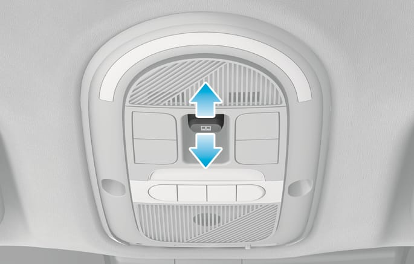
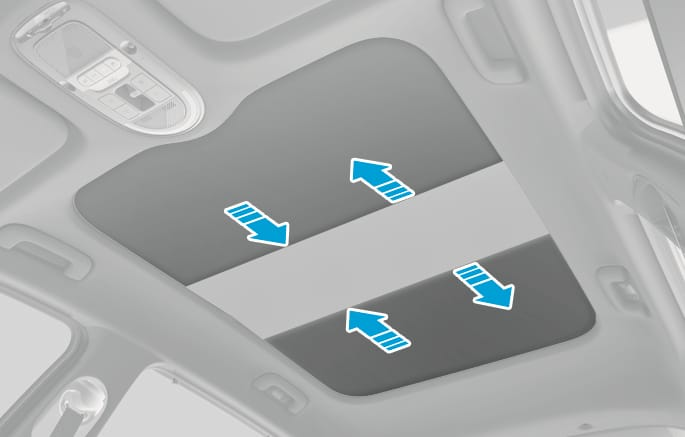
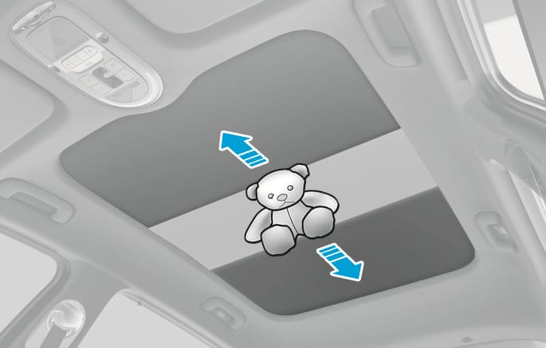

파워 선블라인드 열고 닫기
비전루프를 통해 들어오는 직사광선을 차단할 수 있습니다.

2C_VisionroofPowersunblindOpen

2C_VisionroofPowersunblindOpen_2
시동을 걸거나 차량 전원이 'ON'일 때 비전루프 스위치를 이용해 비전루프를 작동할 수 있습니다.
-
스위치를 뒤쪽으로 누르면 파워 선블라인드가 열립니다.
-
스위치를 앞쪽으로 누르면 파워 선블라인드가 닫힙니다.
작동 중 멈추려면 스위치를 어느 방향으로든 살짝 누르십시오.
파워 선블라인드를 손으로 밀거나 당기지 마십시오. 파워 선블라인드가 손상되거나 오작동할 수 있습니다.
-
시동 'OFF' 또는 'ACC' 상태가 된 후에도 약 3분 동안 비전루프를 작동할 수 있습니다. 단, 3분 이내라도 운전석이나 동승석 도어를 연 후에는 비전루프를 작동할 수 없습니다.
-
파워 선블라인드에 발생하는 주름은 사용된 소재의 특성상 발생할 수 있는 정상적인 현상입니다.

2C_VisionroofAutoReverse
파워 선블라인드가 닫히는 중 일정한 저항이 감지되면 자동으로 움직임을 멈추고 일정 위치까지 다시 열립니다.
-
얇거나 부드러운 물체가 끼인 경우, 물체 끼임 인식 기능이 작동하지 않습니다.
-
비전루프 작동 시의 부상 위험을 방지하려면 파워 선블라인드의 이동 경로에 얼굴, 팔, 손 등 신체 일부나 그밖의 장애물이 있는지 확인하십시오.
-
고의로 신체 일부를 사용해 물체 끼임 인식 기능을 시험하지 마십시오. 비전루프가 다시 열리더라도 신체 일부가 끼거나 부상을 입을 수 있습니다.
파워 선블라인드가 완전히 열리거나 닫히면 스위치에서 손을 떼십시오. 스위치를 계속 누르고 있는 경우 비전루프 모터가 손상될 수 있습니다.